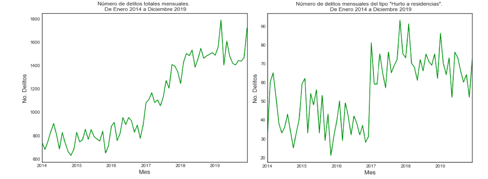
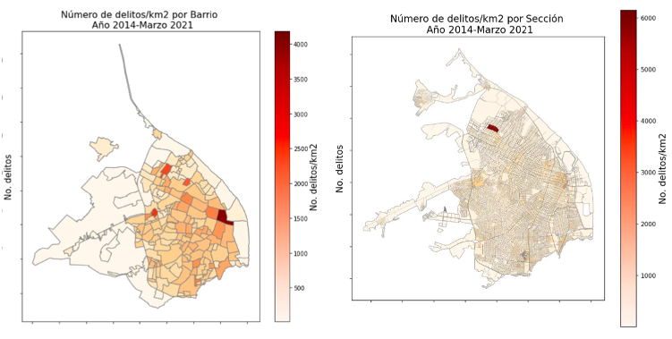
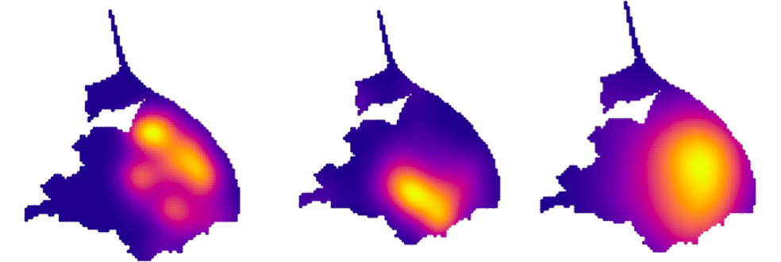
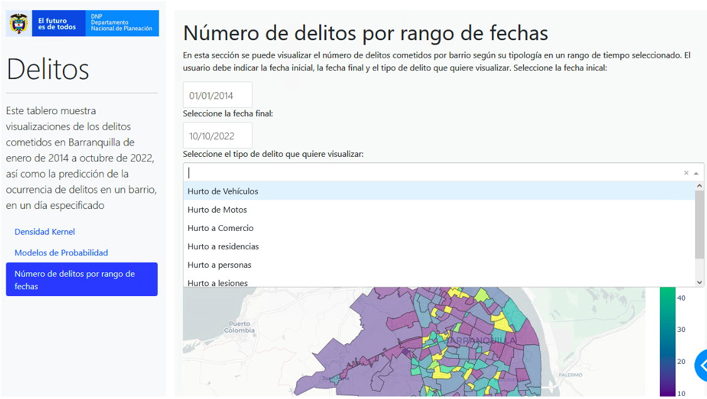
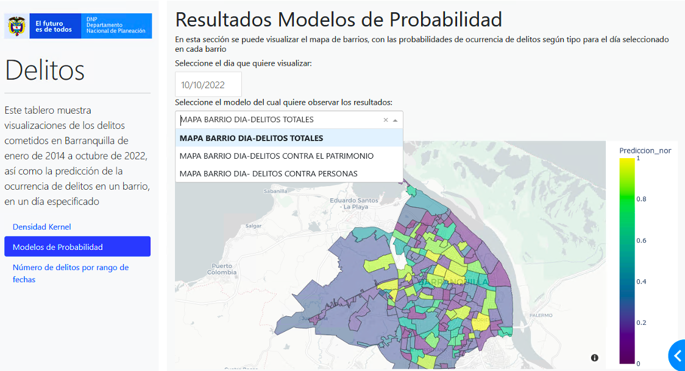
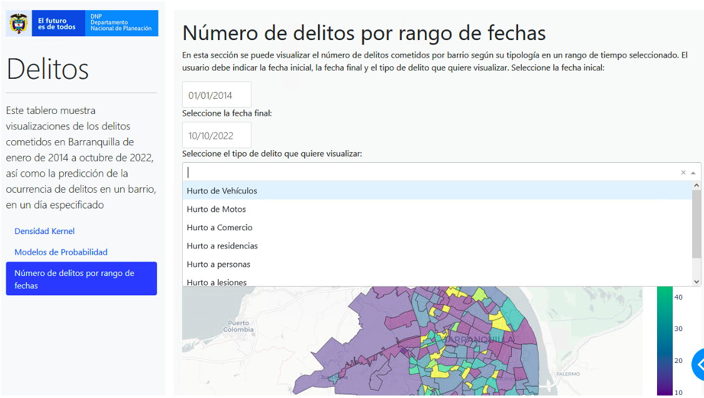
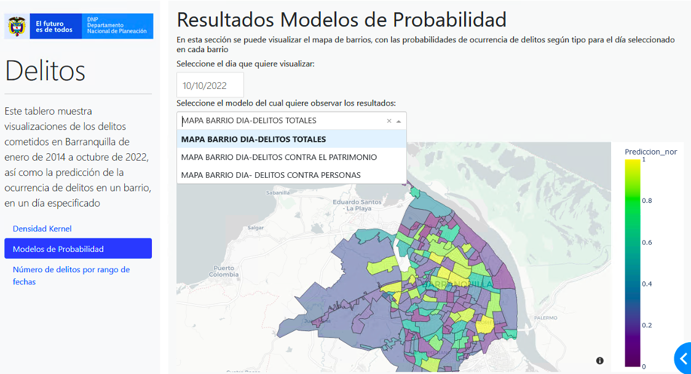

Crime prediction model for Barranquilla
In this project, I worked with a geo-referenced database containing the time and date of crimes in Barranquilla, a city in Colombia. Additionally, I utilized shapefiles of the city of Barranquilla, which provided geometric location and attribute information for various geographical areas, ranging from the largest areas (localities) to the smallest areas (sections), which are groupings of 20 to 22 blocks.
The project involved the following steps:
1. Descriptive Analysis: I conducted a descriptive analysis to understand the evolution of crimes, identify the most common types of crimes, analyze seasonality, and determine the areas with the highest occurrence of each type of crime.
2. Crime Prediction Modeling: I explored various models for predicting crime occurrences in different geographic locations and age ranges to assess the accuracy of each model.
3. Dashboard Design: After selecting the most suitable prediction model, I designed a dashboard. The dashboard allows users to generate heat maps based on a selected date range and type of crime. Additionally, it displays areas with the highest predicted crime occurrence for the following day based on the selected prediction model.
Descriptive analysis
For the descriptive analysis, the first step involved creating time series plots of crimes. These plots revealed different patterns based on the type of crime. For example, the left graph depicts the total number of crimes over time, while the right graph focuses specifically on "residential burglaries." By plotting crimes on a daily basis, we were able to discern any seasonal trends. Additionally, pie charts were used to illustrate aspects such as the distribution of weapon types used in different crimes. These visualizations helped in understanding the dynamics of crime occurrences and provided valuable insights into their patterns and characteristics.
In addition to the aforementioned visualizations, heat maps were generated to identify areas with the highest occurrence of crimes based on their types. This involved assigning each defined geographical area (e.g., neighborhoods) the crimes that occurred within them. The total number of crimes in each geographical area was then aggregated and plotted on maps. This process was repeated for different geographic areas of varying sizes (e.g., localities, neighborhoods, sections) and for different time periods (e.g., the entire series or specific years) using the shapefiles as a reference. These heat maps provided a spatial understanding of crime distribution and allowed for the identification of high-crime areas based on crime types and geographical locations.
In the graph on the left are the maps for crimes from 2014 to 2014 according to neighborhood and on the right according to section.
Kernel Density Estimation
KDE (Kernel Density Estimation) is a smoothing technique that involves fitting Gaussian distributions centered on each sample point and then summing them to produce a smooth map over the study area. This map captures the density or volume of points/crimes over the entire study area without relying on predetermined areas, as we did in the previous section with neighborhoods and sections. In this model, the parameter that is fitted is the bandwidth of the distributions, which determines the width of the kernels used in the estimation. The result is a map that highlights the hot spots of each crime based on their density across the study area.
Predictive Models
For the model generation process, the data were initially prepared according to the chosen geographic and time levels. For instance, in the case of neighborhood-day crime analysis, a matrix was constructed to contain counts of crimes committed on preceding days. Additionally, a variable was created to represent the cumulative sum of crimes committed in neighboring areas. This preparation aimed to capture temporal and spatial patterns in crime occurrences, which were then used as features for the predictive models.
The table is structured with the target variable as binary (indicating whether crimes were committed on day i) and the explanatory variables including the number of crimes on preceding days, the day of the week of the crime, and the sum of crimes in neighboring areas
Data table for neighborhood-day level model
| Year | Week | Day | Crimes were committed during the day i? | Number of crimes committed during day i-1 | ... | Number of crimes committed during day i-7 | Day of the week |
|---|---|---|---|---|---|---|---|
| 2014 | 1 | 1 | 1 | 2 | ... | 10 | Monday |
| 2014 | 1 | 2 | 0 | 2 | ... | 10 | Tuesday |
| 2014 | 1 | 3 | 0 | 2 | ... | 10 | Wednesday |
| ... | ... | ... | ... | ... | ... | ... | ... |
| 2022 | 208 | 1456 | 0 | ... | ... | 10 | Monday |
The table is structured with the target variable as binary (indicating whether crimes were committed on day i) and the explanatory variables including the number of crimes on preceding days, the day of the week of the crime, and the sum of crimes in neighboring areas
- XG-Boost Model
- Light GBM-Model
- Ada-Boost Model
- K-NN Model
The following metrics were used to evaluate the model, both in the test data and in the training data:
- Accuracy (Precision): Corresponds to the percentage of predicted crimes that were actually crimes.
- Recall: Corresponds to the percentage of actual crimes that were predicted.
- F1: The F1 value is used to combine the precision and recall measures into a single value and assumes that we care equally about precision and completeness.
We trained several models using data from both before and after the pandemic, as we observed significant changes in crime patterns during this period. The best results were achieved with the models trained after the pandemic, using data from January 1, 2020, to September 30, 2022, as the training set, and data from October 1 to October 30, 2022, as the test set. These models covered total crimes, as well as crimes against persons and property, and the following results were obtained:
Results models neighborhood-day
| Model | Precision | Recall | F1 |
|---|---|---|---|
| Total crimes (LGBM) | 0.79 | 0.98 | 0.88 |
| Crimes against people (LGBM) | 0.75 | 0.98 | 0.85 |
| Crimes against patrimony (XG-Boost) | 0.26 | 0.66 | 0.38 |
The table displays the models that yielded the best results and were consequently selected for the visualization dashboard. However, at lower levels of granularity (such as hours, sections, and specific types of crimes like theft from persons or burglary), the results were not satisfactory.
Data visualization board
A dashboard visualization tool has been developed usung Dash, featuring three navigation windows: Kernel Density, Probability Models, and Number of Crimes by Date Range.
- The "Kernel Density" window showcases a map of Barranquilla, highlighting areas with the highest number of crimes by type, utilizing the kernel density methodology.
- The second window presents the results of predictions alongside the actual crime data.
- The second window presents the results of predictions alongside the actual crime data.
 



Here are the tabs of the generated dashboard, which was delivered to the client, so that they can visualize past data and predictions as the database is updated.
Full report: To view full report and presentation click below (Available in Spanish).